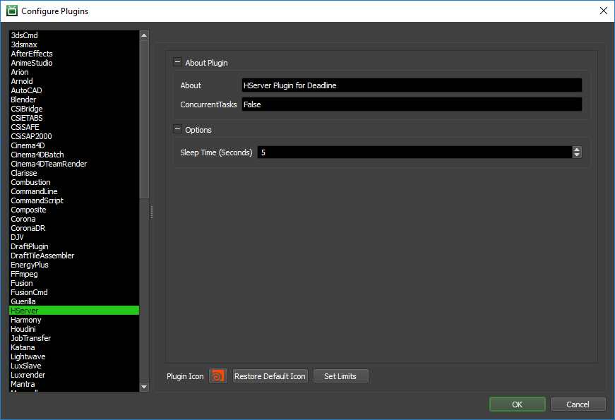

HServer¶
Job Submission¶
You can submit interactive HServer jobs from within Houdini by installing the integrated submission script, or you can submit HServer “Reserve” jobs from the Monitor. The instructions for installing the integrated submission script can be found further down this page.
To submit from within Houdini, select ‘Render’ -> ‘Submit HServer To Deadline’.
Submission Options¶
The general Deadline options are explained in the Job Submission documentation. The HServer specific options are:
HServer Count: The number of machines to reserve for HServer rendering.
Use IP Address: If checked, the Active Servers list will show the server IP addresses instead of host names.
Render Node: Select the render node to render. Note that if the selected node depends on other nodes, those other nodes will be rendered as well.
Rendering¶
After you’ve configured your submission options, press the Reserve Servers button to submit the HServer Reserve job. After the job has been submitted, you can press the Update Servers button to update the job’s ID and Status in the submitter. As nodes pick up the job, pressing the Update Servers button will also show them in the Active Servers list. Once you are happy with the server list, press Start Render to start rendering.
After the render is finished, or if you choose to interrupt the render, you can then press Release Servers or close the submitter to mark the HServer Reserve job as complete so that the render nodes can move on to another job.
Plugin Configuration¶
You can configure the HServer plugin settings from the Monitor. While in power user mode, select Tools -> Configure Plugins and select the HServer plugin from the list on the left.
Options
Sleep Time: The HServer plugin doesn’t actually do anything but check to see if the HServer Reserve job has changed state. This is the amount of seconds between these checks.
Integrated Submission Script Setup¶
The following procedures describe how to setup the integrated HServer submission script for Deadline. This script has been tested with Houdini 9 and later.
You can either run the Submitter installer or manually install the submission script.
Submitter Installer¶
Run the Submitter Installer located at
<Repository>/submission/hserver/Installers.
Manual Installation¶
On Windows or Linux, copy the client script to the Houdini install directory.
If the folder
[Houdini Install Directory]\houdini\scripts\deadline\doesn’t exist, create it.Copy the file:
[Repository]\submission\HServer\Client\DeadlineHServerClient.py to [Houdini Install Directory]\houdini\scripts\deadline\DeadlineHServerClient.py
On macOS, copy the client script to the Houdini Framework folder:
If the folder
[Houdini Framework]/Versions/Current/Resources/houdini/scripts/deadline/doesn’t exist, create it.Copy the file:
[Repository]\submission\HServer\Client\DeadlineHServerClient.py to [Houdini Framework]/Versions/Current/Resources/houdini/scripts/deadline/DeadlineHServerClient.pyThe [Houdini Framework] folder can typically be found in
/Library/Frameworks/Houdini.Frameworkor in Houdini 16 and onwards in/Applications/Houdini/Houdini[VERSION]/Frameworks/Houdini.framework, where [VERSION] might typically be “16.0.000”.
Add a menu item to execute the script:
Open the file
[Houdini Install Directory]/houdini/MainMenuCommonin a text editor.Add the following in between the <mainMenu> and </mainMenu> tags, and make sure it is added after the </menuBar> closing tag.
<addScriptItem id="h.deadlineHserver"> <parent>render_menu</parent> <label>Submit HServer To Deadline</label> <scriptPath>$HFS/hserver/scripts/deadline/DeadlineHServerClient.py</scriptPath> <scriptArgs></scriptArgs> <insertAfter/> </addScriptItem>For example, this is what the last few lines of your MainMenuCommon file might look like:
</menuBar> <addScriptItem id="h.deadlineHserver"> <parent>render_menu</parent> <label>Submit HServer To Deadline</label> <scriptPath>$HFS/hserver/scripts/deadline/DeadlineHServerClient.py</scriptPath> <scriptArgs></scriptArgs> <insertAfter/> </addScriptItem> </mainMenu>
FAQ¶
Which versions of Houdini are supported by Deadline’s HServer plugin?
Houdini 9 and later are supported.
A Worker is rendering the HServer Reserve job, but HServer isn’t running on the machine.
The HServer application must already be running on all machines (it should have been installed and configured as part of the Houdini installation). The HServer Reserve job itself doesn’t start up any applications, it just reserves the Worker so that the machine is free to do interactive HServer rendering.
Does the HServer process do the actual rendering?
No. Houdini will talk to HServer and tell it to start the Mantra processes for the actual rendering.
Can I run 2 or more Workers on a machine for HServer rendering?
Yes, providing that you enable the Use IP Address option in the integrated HServer submitter. When multiple Workers pick up the Reserve job, you will see duplicate IP address entries for each Worker. This is normal, and a separate Mantra process will be started for each Worker when the render begins.
Error Messages and Meanings¶
This is a collection of known HServer error messages and their meanings, as well as possible solutions. We want to keep this list as up to date as possible, so if you run into an error message that isn’t listed here, please visit the Thinkbox Help Centre and let us know.
Currently, no error messages have been reported for this plugin.

{kind=link}
{kind=link}
{kind=link}